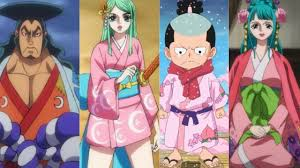

Kozuki Oden nació en el País de Wano, un territorio cerrado al mundo exterior. Desde joven fue rebelde, fuerte y amante de la aventura, lo que lo llevó a ser desterrado varias veces. Tras demostrar su poder, se convirtió en el Daimyo de Kuri y reunió a un grupo de samuráis leales: los Nueve Vainas Rojas (Akazaya Nine). Años después, Oden abandonó Wano para unirse a los Piratas de Barbablanca y más tarde a los Piratas de Roger, con quienes llegó hasta la última isla del Grand Line, Laugh Tale, descubriendo los secretos del mundo y del One Piece. De regreso en Wano, Oden intentó abrir las fronteras del país para cumplir la promesa de Roger, pero fue traicionado por Kurozumi Orochi y Kaido, quienes tomaron el poder. Finalmente, fue ejecutado en un caldero de aceite hirviendo, donde resistió durante una hora sosteniendo a sus hombres, demostrando un coraje que lo volvió leyenda.
Padre: Kozuki Sukiyaki, antiguo Shogun de Wano.
Esposa: Kozuki Toki, una mujer que viajó desde el pasado gracias a su Fruta del Diablo Toki Toki no Mi.
Hijos: Kozuki Momonosuke (heredero legítimo del clan Kozuki) y Kozuki Hiyori. Su familia fue perseguida tras la muerte de Oden, pero sus hijos sobrevivieron gracias al sacrificio de Toki, quien envió a Momonosuke y algunos samuráis 20 años al futuro.
Un grupo de samuráis leales a Oden, cada uno con habilidades y personalidades únicas. Entre ellos se encuentran: